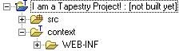

The Tapestry project nature is what makes an Eclipse project a Tapestry project. The project builder, the Spindle wizards and in many cases Spindle editors depend on a project having this nature.
Projects that have the Tapestry nature will appear like this:  (note the little "T")
(note the little "T")
Spindle requires that projects that have the Tapestry nature already have the Java nature (i.e. they are Java projects). Spindle will not allow one to add the Tapestry nature to a project that does not at least have the Java nature.
Note: that lots of plugins provide thier own project natures. Most do what Spindle does, i.e. add thier nature to a project that already has the Java nature. It is perfectly ok to add the Tapestry nature to a project with any number of other natures; as long as the Java nature is one of them. So it is possible to use, say, the Sysdeo Tomcat plugin and Spindle in the same project (the Tomcat plugin adds its own nature in addition to the Java nature).
So, how does one add the Tapestry nature to a project? There are two answers. First, one can use the "New Tapestry Web Project" Wizard to create your project. Upon completing the wizard the project will be properly configured with the Tapestry nature. The second method requires a bit of preamble...
A Tapestry project requires that the project layout be similar to this:

Note there is a folder called "context" that is the root of an exploded war file layout. The context folder is also annotated with the little "T" to indicate its special purpose in this project.
End of preamble.